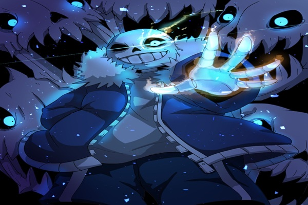
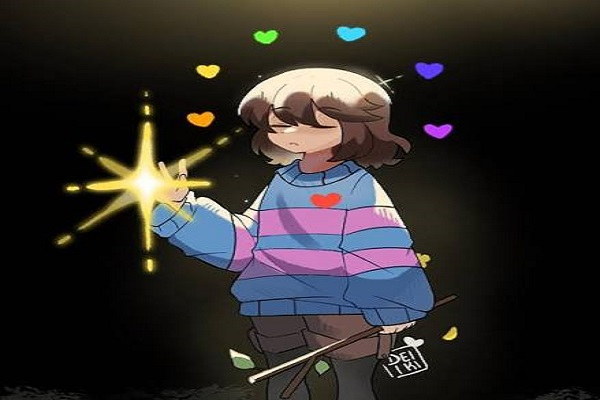
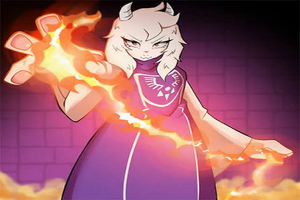
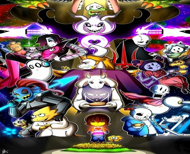
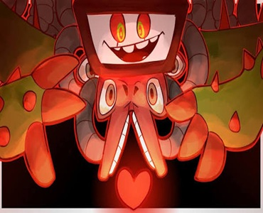
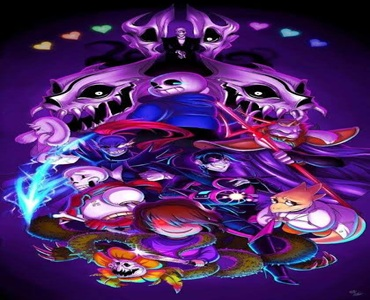
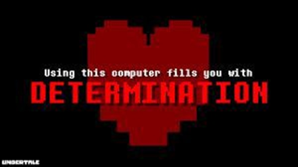

Sans
O Sans é sem duvidas o personagem mais conhecido de Undertale e isso se deve por alguns fatores, sua perssonalidade sendo ele um esqueleto preguiçoso e que fica fazendo piadas sobre esqueletos, ou também pelo plot twist na rota genocida onde ele tem o que é considerada uma das lutas mais dificeis do jogo ou até mesmo por conta da musica que toca nessa luta Megalovania
Toriel
A é a rainha do Subsolo e também a pessoa que adota as crianças que caiem no Subsolo você a encontra nas Ruínas onde ela decide ficar para proteger as crianças humanas e ela te ensina as mecanicas do jogo afinal o seu nome Toriel é um anagrama para tutorial
Frisk
Frisk é a criança protagonista de Undertale que cai no mundo dos monstros e precisa decidir o destino deles através de suas escolhas.




Pacifista
Se o protagonista poupar Flowey , ele aparecerá após a ligação telefônica da Rota Neutra. Ele dará uma dica sobre como obter o Final Pacifista Verdadeiro, excluindo uma tentativa abortada da Rota Genocida . Se Flowey for morto, o jogo retorna imediatamente ao Menu Inicial . O protagonista poderá então recarregar seu arquivo de SALVAMENTO para cumprir quaisquer requisitos pendentes, desde que não tenha ganho EXP / LOVE . Caso contrário, deverá reiniciar o jogo. Observe que matar Asgore ou Flowey não concede EXP.
A lista de requisitos é a seguinte:
Derrote Asgore e Photoshop Flowey , completando uma Rota Neutra. É possível combinar isso com os requisitos das etapas 2 a 6 a seguir e, em seguida, retornar após derrotar Asgore e recarregar o arquivo de SALVAMENTO.
Complete Ruínas e poupe Toriel .
Após derrotar Papyrus , visite a casa dele e complete o encontro/passeio com ele.
Depois que Undyne desmaiar por perseguir o protagonista, pegue um copo de água no bebedouro próximo e jogue nela.
Sair do quarto enquanto ela ainda está desmaiada interrompe a Rota Pacifista Verdadeira, pois ela desaparece do local quando você retorna. Papyrus aparece em frente à casa dela e diz ao protagonista que ela teve uma insolação e que eles não podem ficar com ela.
Volte para Waterfall e vá até a casa da Undyne . Se tudo correr bem, Papyrus estará esperando do lado de fora. Converse com ele para entrar na casa, complete a "aula de culinária", jante e simule uma batalha com a Undyne.
Se Photoshop Flowey e Mettaton EX já tiverem sido derrotados, ela entrega imediatamente a carta ao protagonista. Se o inventário dele estiver cheio, ela espera para entregá-la do lado de fora da casa de Papyrus.
Caso contrário, explore Hotland e o CORE . Na luta contra Mettaton EX, alcance uma pontuação de 10.000 (12.000 se Mettaton ainda tiver pernas) para encerrar a batalha pacificamente. Isso inclui usar a melhoria do celular da Alphys para atirar no coração dele durante alguns dos seus ataques.
Volte do NÚCLEO em direção ao Resort MTT , até a ponte que conecta os dois lugares. Undyne liga para o protagonista lá para perguntar se ele pode entregar uma carta para ela. Essa ligação também pode ser acionada em vários outros locais se o último SALVAMENTO for fora do NÚCLEO e da Nova Casa . [ 1 ]
Fale com Undyne do lado de fora da casa de Papyrus para receber a Carta de Undyne .
Se o protagonista descartar a carta, poderá retornar a Undyne para receber a Carta EX de Undyne, que não pode ser descartada.
Coloque a carta debaixo da porta do laboratório da Alphys e complete o "encontro" com ela.
Ao sair do Lixão após o encontro com Alphys, Papyrus liga e diz ao protagonista para encontrar Alphys em seu laboratório. Retorne ao Laboratório de Alphys para encontrar um bilhete que leva ao seu "banheiro", que na verdade é um elevador que leva ao Laboratório Verdadeiro . O elevador repentinamente quebra durante a descida, forçando o protagonista a continuar até o final Pacifista Verdadeiro a partir deste ponto.
Encontre as quatro chaves espalhadas pelo Laboratório Verdadeiro e coloque-as em seus respectivos lugares para abrir a sala do gerador. Ligue o gerador para iniciar uma conversa com Alphys. Volte para o elevador perto da sala do gerador para ser transportado para Nova Casa, com a saída bloqueada por trepadeiras. Isso indica que o Final Pacifista Verdadeiro ocorrerá. É impossível sair de Nova Casa depois deste ponto.
Anúncio
História principal
Completando Amizades
Se você ainda não tiver feito amizade com Papyrus, volte para a casa dele em Snowdin , onde ele estará do lado de fora. Interaja com ele para iniciar o encontro/passeio.
Se você ainda não se tornou amigo da Undyne, volte para a casa dela em Waterfall, onde Papyrus está do lado de fora. Interaja com Papyrus para iniciar o encontro.
Fazendo amizade com Alphys
Na entrada do Núcleo, Undyne liga para o protagonista pedindo que ele entregue sua carta para Alphys.
Se Undyne não tiver se tornado amiga do protagonista na Rota Pacifista-Neutra, e este retornar à casa dela após derrotar Asgore, ela lhe entregará a carta imediatamente após se tornarem amigos. Ela dirá que Papyrus sugeriu entregar a carta ao protagonista antes, mas que Undyne ainda o odiava na época.
Após entregar a carta para Alphys, ela a confunde com uma carta do protagonista e sai em um encontro com ele.
Durante o encontro de Alphys, as duas vão ao Lixão. Lá, encontram Undyne, que decidiu entregar a carta pessoalmente. Alphys conta a Undyne algumas verdades sobre seu trabalho "científico", que na verdade se resumia a ficar deitada assistindo anime e lendo mangá. Undyne expressa seu apoio a Alphys e a incentiva a treinar com Papyrus. Em seguida, ela confronta a protagonista sobre anime, perguntando se aquilo é real. Independentemente da resposta da protagonista, Undyne agradece pela informação e o evento termina.
Após o encontro, Papyrus liga para o protagonista e o instrui especificamente a ir ao laboratório de Alphys, sem citar nenhum motivo além de uma "boa sensação" que ele afirma ter.
Anúncio
Laboratório Verdadeiro
A entrada para o Laboratório Verdadeiro, inicialmente disfarçada de banheiro.
A entrada para o Laboratório Verdadeiro, inicialmente disfarçada de banheiro.
Artigo principal: True Lab
Ao chegar ao laboratório, o protagonista encontra um bilhete de Alphys, no qual ela declara que irá "enfrentar seus próprios erros". O bilhete instrui o leitor a entrar no que antes se acreditava ser o banheiro de Alphys para descobrir a verdade, caso ela não retorne.
O protagonista entra pela porta, que leva a um elevador. Ele desce até o Laboratório Verdadeiro, mas o elevador perde energia e apresenta defeito, deixando-o preso lá dentro. Explorando o laboratório, ele encontra registros antigos, detalhando os experimentos de Alphys com ALMAS e a determinação para permitir que as ALMAS dos monstros persistissem após seus corpos se transformarem em pó. Injetar determinação nos monstros que haviam "caído" os despertava, e Alphys chegava a acreditar que eles haviam se recuperado bem, apesar de sua decepção por o experimento não ter alcançado os resultados desejados. No entanto, o experimento deu errado, e os monstros derreteram e se transformaram em Amálgamas – fusões de vários monstros. Vários desses amálgamas atacam o protagonista, mas ele os apazigua e os poupa. O protagonista vê o extrator de determinação, que lembra parte da forma de Flowey durante sua batalha como chefe na Rota Neutra, e descobre que Alphys realizou alguns experimentos com Flores Douradas , que produziram um único espécime vivo, Flowey, que escapou.
Mais adiante no Laboratório Verdadeiro, o protagonista entra em uma sala com uma televisão e um videocassete. Ao inspecionar a televisão, o protagonista consegue assistir a cinco fitas VHS diferentes . As fitas revelam as interações de Asriel com o humano caído e o plano deles para romper a barreira com sete ALMAS humanas , incluindo a do humano caído.
Após coletar todas as chaves, Frisk liga a energia, restaurando o funcionamento dos elevadores. Alguns Amálgamas aparecem, mas Alphys os detém, pedindo desculpas por eles estarem agressivos devido à fome. Ela explica ainda que os corpos dos monstros não suportaram a determinação e, por isso, se fundiram. Alphys agradece o apoio do protagonista e declara aos Amálgamas que eles retornarão para casa.
Alphys sai do Laboratório Verdadeiro e o protagonista retorna a um dos elevadores. Ele recebe uma ligação de alguém que não reconhece. A voz, presumivelmente de Asriel, chama o protagonista pelo nome dado ao humano caído no início do jogo e diz que "tudo se encaixou" e que "nos veremos em breve".
Narrador: (Toca...)
Narrador: (É uma voz que você nunca ouviu antes.) ??????
:

Neutras
Este final ocorre quando os requerimentos de nem da Verdadeira Rota Pacifista, nem da Rota Genocida, foram atingidos, ou se o protagonista não matou ninguém na primeira vez jogando como um pré-requisito para a Verdadeira Rota Pacifista. Há muitas versões deste final, todas constistindo em Sans ligando no Celular do protagonista e deixando uma mensagem falado sobre o destino do Subsolo. Porém, o conteúdo da ligação varia dependendo das ações do protagonista ao longo do jogo. A música An Ending toca durante a chamada, exceto nas variantes Mettaton, Sem Líder, Cachorro, Alphys e Impossível. Epílogo da Rota Neutra Em todos os finais da Rota Neutra (exceto ao abortar a Rota Genocida em Teraquente), Alphys diz ao protagonista que ele(a) tem que matar Asgore e pegar sua ALMA, já que uma ALMA humana sozinha não consegue cruzar a barreira. Acontece em todos os epílogos da Rota Neutra: Asgore é morto, seja pelo protagonista ou por Flowey Flowey é ou derrotado ou não quer lutar As seis ALMAs humanas são perdidas Os monstros continuam presos atrás da barreira e assumem que o protagonista escapou do Subsolo. Depois de uma pequena e incompleta seção de créditos da Rota Neutra, Sans liga no Celular do protagonista para deixar uma mensagem. Ele começa a chamada com um comentário especial se certos requerimentos foram atingidos. Sans só vai fazer um comentário; esta tabela lista eles em ordem de maior importância a menor (Por exemplo, se o protagonista nunca remover a Bandagem, nunca usar um item consumível e não matar Papyrus, Sans vai comentar sobre pegar algo para comer). Requiremento(s) Resultado Nunca consumir nada. Não matar Papyrus. Nunca removeu a Bandagem. Estar no LV 1. Sans comenta sobre a habilidade do protagonista de se desafiar, mas diz que ele(a) não deve se gabar por isso. Nunca consumir nada. Não matar Papyrus. Sans pergunta se ele(a) comeu alguma coisa. Usando a Bandagem. Não matar Papyrus. Sans comenta que o protagonista ainda está usando a bandagem nojenta que estava com ele(a) no começo. Nunca SALVOU. Não matar Papyrus. Sans sugere que o protagonista SALVE seu jogo. Tem um Pedaço de Boneco de Neve. Não matar Papyrus. Sans menciona que um certo boneco de neve está muito feliz. Não atingiu nenhum dos requerimentos especiais listados acima ou matou Papyrus. Sans simplesmente deixa uma mensagem para o protagonista. Abortou a Rota Genocida em Teraquente. Sans imediatamente dá o telefone para Alphys. A chamada de telefone então segue para seu respectivo final. Nota: Os nomes a seguir não são oficiais. Publicidade Família de Finais de Toriel Requerimentos: Toriel foi poupada. Toriel volta a reinar sobre o Subsolo e instituiu uma política de não-hostilidade a futuros humanos que caiam no mundo deles. Este final então se separa em três variantes: o "Final Família", o "Final Undyne Traída" ou o "Final Rainha Exilada." Final Família (Pacifista Falho) Requirementos: O protagonista fez amizade com Papyrus e Undyne e não matou nenhum monstro. Mesmo com o desaparecimento das ALMAs humanas e a morte trágica de Asgore, Toriel eleva o espírito dos habitantes do Subsolo e diz a eles para não se desesperarem. Sans também encoraja o protagonista a não desistir. A ligação passa para Papyrus, que orgulhosamente proclama sua nova posição como "CAPITÃO DA GUARDA REAL". Isso sendo mostrado como uma posição "falsa", já que a Guarda Real (cujo objetivo principal era proteger as ALMAs humanas) foi na verdade debandada. O único dever dele é, na verdade, cuidar do jardim do castelo de Nova Casa. A antiga capitã da Guarda Real, Undyne, se junta a chamada e explica que ela começou a trabalhar como assistente de laboratório de Alphys. Ela também foi escolhida como professora de educação física da nova escola de Toriel; ela se gaba de conseguir levantar sete crianças. Ela então começa a lamentar a perda de Asgore, mas então reafirma ao protagonista que não foi culpa dele(a) e que ele(a) só estava fazendo o que tinha que fazer. A próxima parte do final varia dependendo se o protagonista se encontrou com Alphys ou não. Se o protagonista não se encontrou com Alphys: Alphys se torna ainda mais reclusa. Porém, Undyne confiantemente afirma que ela pode ajudar Alphys a superar qualquer coisa que ela estiver passando. Undyne também lembra o protagonista que ela e os outros monstros sacrificaram muito para ajudar o protagonista a voltar a Superfície; por isso, o protagonista deve aproveitar muito a vida na Superfície para fazer esse sacrifício valer a pena. Se o protagonista se encontrou com Alphys: Undyne a coloca na chamada. Alphys diz ao protagonista que Mettaton está bem e depois menciona que ela está procurando por um novo jeito de libertar os habitantes do Subsolo. Ela está trabalhando mais do que nunca, principalmente porque Toriel é uma supervisora muito mais estrita do que Asgore jamais foi. Neste momento, ocorre a Undyne/Alphys de perguntar se Toriel gostaria de se juntar a conversa; porém, Toriel simplesmente diz a ela que está ocupada, sem perceber que o protagonista está do outro lado da linha. Papyrus e Sans dizem brincando que Toriel provavelmente ficaria falando por horas e horas se soubesse que o protagonista estava do outro lado da linha e que eles terão "PIEDADE E POUPAREMOS [ELE(A)] DELA." Undyne e Alphys (se ela foi puxada para a chamada) então sugerem que ele(a) ligue de volta logo, já que ela adoraria conversar. A chamada então termina com Sans mencionando que o celular está quase sem bateria e todos se despedem. Publicidade Final Undyne Traída Requerimentos: O protagonista ter poupado Papyrus e Undyne tendo matado menos de 10 monstros, mas não fez amizade com Undyne ou matou monstros depois de fazer amizade com ela (Undyne não aceita a amizade do protagonista se este(a) tem EXP). A primeira parte da ligação é como a do Final Família. Toriel dá o seu melhor para os habitantes do Subsolo não desistirem mesmo que a situação pareça bem ruim. Sans também diz que o protagonista também não deve desistir. Sans então dá o telefone a Papyrus, que assume pelo resto da chamada. Papyrus afirma que Toriel debandou a Guarda Real e que ele não tem ideia do que vai fazer com a vida dele, mas que ele vai continuar trabalhando duro, "MESMO QUE SEJA POR NADA!" Porém, apesar da garantia de Papyrus de que ele está bem, ele diz que Undyne está tendo dificuldades desde que perdeu seu emprego e sua casa, e complementa dizendo que ele e Sans estão cuidando dela na casa deles. Sans contratou ela para o stand ilegal de cachorro quente dele em Teraquente, mas ela odeia trabalhar lá. O resto da chamada se divide em três caminhos diferentes dependendo do que o protagonista fez. Se o protagonista não fez amizade com Undyne, mas poupou Mettaton: Undyne simplesmente culpa o protagonista pela morte de Asgore. Papyrus menciona que ela tem um plano de cruzar a barreira e derrotar o protagonista. Papyrus acha que o plano dela é impossível, mas espera que ele dê certo para ele poder encontrar o protagonista de novo, mesmo que isso signifique que eles terão que lutar. Papyrus então diz para o protagonista cruzar os dedos e manter contato para facilitar o plano deles. Se o protagonista matou Mettaton: Undyne está devastada por não só Asgore ter sumido, mas Alphys também, não tendo sido achada por nenhum dos outros personagens (é possível que ela tenha cometido suicídio no Verdadeiro Laboratório). Undyne lamenta não ter sido capaz de protegê-la e Papyrus comenta que é difícil fazer com que ela faça qualquer coisa. Ele sugere que ela vá atrás do protagonista para se vingar, mas Undyne diz que "Vingança não vai trazer ninguém de volta." Papyrus não sabe o que aconteceu com Asgore e Alphys, então ele pede para que o protagonista traga os amigos de Undyne de volta já que ela não está tão bem. Se o protagonista fez amizade com Undyne, mas matou monstros depois: Undyne se odeia por ter se tornado amiga do protagonista porque ele(a) matou alguém logo depois de eles terem formado esta amizade. Ela se sente machucada, traída e brava consigo mesma, e não entende porquê se deixou ser amiga do protagonista. Ela diz que sabia como humanos eram, mas falhou em resistir a amizade; pelo seu erro, mais pessoas se machucaram. Papyrus então diz que o protagonista "PROVAVELMENTE NÃO DEVERIA VOLTAR AQUI NUNCA MAIS" já que Undyne destruiria ele(a) sem que nem a rainha pudesse pará-la. A chamada então termina com Papyrus dizendo adeus (para sempre, no último ramo) para o protagonista. Publicidade Final Rainha Exilada Requerimentos: O protagonista matou dez ou mais monstros, Papyrus ou Undyne. A nova política de Toriel enfrentou grande retaliação não só porque Asgore foi morto, mas as ALMAs humanas sumiram também, junto de Papyrus, Undyne ou outros cidadãos. Por conta disso, uma rebelião se formou para derrubar a rainha. Se Undyne está viva: Undyne fica furiosa pela morte de Asgore (e Alphys, se Mettaton foi morto também), então ela lidera uma rebelião e bane Toriel de volta para as Ruínas, se tornando a imperadora do Subsolo no processo. Sans comenta que Undyne parece mais focada em destruir a humanidade do que Asgore costumava ser. Se Undyne está morta: Toriel pacificamente renuncia e retorna as Ruínas depois de ouvir sobre a rebelião, fazendo com que o Subsolo se tornasse uma anarquia sem esperanças. Sans menciona que ele decidiu acompanhar Toriel quando ela voltou para as Ruínas, levando livros da biblioteca de Nevada para ela, assim ela não tem que ler os mesmos livros. Se Papyrus está vivo: Papyrus também acompanha Toriel para as Ruínas e até joga jogos com ela. Papyrus e Sans também convenceram Toriel a sair das Ruínas as vezes, prometendo ficar lá enquanto isso para procurar por humanos. Papyrus diz que ele ama passar o tempo com a Rainha e que está treinando para ser uma boa mãe quando o protagonista voltar (uma possível referência ao Greenlight trailer onde Papyrus pergunta "SOU EU? EU SOU A MÃE?"). Sans termina a chamada dizendo que espera que as "coisas estejam melhores" onde quer que o protagonista esteja. Se Papyrus está morto: Sans diz que Toriel é uma boa colega de quarto e menciona sobre como ela as vezes fala que gostaria de ver o protagonista de novo. Sans não tem coragem de dizer a Toriel que ele(a) matou Papyrus porque ela o/a protegeu. Ele então termina dizendo "nunca volte aqui. voce nao é bem vinde." Publicidade Final Undyne Requerimentos: Toriel está morta e Undyne está viva. Undyne se torna a governante do Subsolo e impõe uma política de destruir todos os humanos que entrarem, o militarizando para fazer isso. Ela tem planos de destruir a barreira e, quando ela o fizer, pretende começar uma guerra contra a humanidade e pessoalmente caçar e destruir o protagonista. Sans menciona não ser capaz de falar com Toriel e, se Papyrus está morto, infere que sabe que ela foi morta e que o protagonista é o/a culpado(a). Ele então diz para o protagonista ficar atento(a), já que "as coisas vao ficar bem ruins para [ele(a)]." Porém, se Papyrus está vivo, Sans simplesmente diz que Toriel não deve estar se sentindo tão bem, permitindo que Papyrus interrompa a chamada e diga ao protagonista que Undyne o escolheu para "A POSIÇÃO REAL MAIS IMPORTANTE," que é a posição de mascote, onde ele anda por aí sendo fofo, mas ele está orgulhoso disso. Mesmo que Undyne vá "PROVAVELMENTE MATAR [O PROTAGONISTA]", Papyrus diz que ele(a) deve vir visitá-los, adicionando que vale o risco. O status de Mettaton não tem efeito no diálogo deste final. Final Mettaton Requerimentos: Toriel e Undyne estão mortas, mas Mettaton está vivo. Mettaton se torna o governante do Subsolo desde que Undyne desapareceu e estabelece uma sociedade distópica onde ele faz lavagem cerebral no Subsolo inteiro com seu programa de TV. Sans menciona que ele se tornou o agente de Mettaton e dá o telefone para ele. Mettaton impõe uma nova política dizendo que qualquer humano que cair no Subsolo pode se juntar ao seu fã-clube de graça. Ele diz que entre as muitas estátuas e monumentos que ele construiu dele mesmo, ele fez uma de Alphys também. Mettaton então continua, dizendo que ele "NÃO FOI O MELHOR PARA ELA." Ele diz que ele ia se desculpar com Alphys e pedir que ela o ajudasse a governar, mas não conseguiu a achar em lugar nenhum, enfatizando ao dizer "CONFIE EM MIM. EU PROCUREI." Mettaton até infere que ela cometeu suicídio, já que ele espera que a vida do protagonista depois de conhecê-lo "TENHA VALIDO A PENA VIVER." Mettaton então pede ao protagonista que ele(a) sempre pense nele e, se Papyrus está morto a chamada acaba aqui. Se Papyrus está vivo, ele então se junta a ligação para dizer que ele se tornou o segundo agente de Mettaton. Ele diz que as coisas ficaram bem melhores depois que o protagonista veio (exceto para que não gosta do Mettaton; de acordo com Papyrus, essas pessoas tendem a "desaparecer"), mas sente falta de Undyne e pede ao protagonista para falar "oi" se ele(a) a vir. It's Showtime! toca depois que Sans dá o telefone a Mettaton, mas para quando ele fala sobre o destino obscuro de Alphys e quando Papyrus aparece se foi poupado. Publicidade Final Papyrus Requerimentos: Toriel, Undyne e Mettaton estão mortos, mas Papyrus está vivo. Pelo processo de eliminação, Papyrus se torna o governante do Subsolo, mesmo que Sans faça a maior parte do trabalho. Sans disse a Papyrus que Asgore, Alphys, Mettaton e Undyne estão viajando. O Subsolo está evoluindo: a produtividade aumentou e Papyrus faz espaguete para todo mundo. A política sobre humanos é que eles não podem ser julgados como todos bons ou ruins; de qualquer jeito, eles ganham puzzles. Uma vez que Sans sai, Papyrus diz que sofre em sua nova responsabilidade como governante sobre saber o que fazer quando alguém "QUER DESISTIR" e sobre como ele sente falta de seus amigos; ele menciona como Undyne nunca atende suas ligações e assume que ela deve estar se divertindo muito na viagem. Porém, Papyrus afirma para o protagonista que ele está determinado a "FAZER TODO MUNDO DESISTIR DE DESISTIR", e espera sair do Subsolo para se encontrar com o protagonista de novo. Final Cachorro Requerimentos: Somente Toriel, Papyrus, Undyne e Mettaton estão mortos. Todos os outros monstros estão vivos, incluindo Glyde e So Sorry. Um pequeno cachorro branco se torna o presidente do Subsolo no meio do caos que se instalou após o desaparecimento de várias pessoas importantes e ninguém mais ter se machucado. O cachorro dorme no trono e não faz absolutamente nada. Sans comenta que esta parece a melhor vida para todo mundo e agradece ao protagonista pelos resultados. "Dogsong" toca durante a chamada como no Final Impossível. Final Sem Líder Para a outra definição de "Rota sem Piedade", onde todos os monstros possíveis são mortos, consulte Rota Genocida. Requerimentos: Toriel, Papyrus, Undyne, Mettaton e pelo menos um (mas não todos) monstro não-boss foram mortos. O Subsolo está sem um líder e as coisas ficaram bem ruins. A atmosfera é pesada e as pessoas sentem que vão simplesmente morrer no Subsolo, presas na escuridão. Sans diz que ele não é o governante porque ele não foi feito para este tipo de coisa e gosta de pegar leve (o que é uma piada; ele diz que é isso que acontece quando pessoas como ele pegam leve). Se 20 ou mais monstros não-bosses forem mortos, Sans nota que o Subsolo está mais vazio agora, antes de mandar o protagonista "ir para o inferno." Se menos de 20 monstros não-bosses forem mortos, Sans simplesmente diz "ate mais." Uma variação deste final, onde todos os monstros encontrados são mortos, é conhecido como Rota Sem Piedade ou Neutra Sem Piedade, e tem um final idêntico. mus_wind toca durante este final, uma trilha ambiente parecida com a que toca quando o jogo é reaberto após uma Rota Genocida ou depois da batalha contra Photoshop Flowey (mus_f_wind2). Publicidade Final Alphys (Quase Genocida) Requerimentos: O protagonista seguiu a Rota Genocida até Cachoeira, mas a abortou em Teraquente. O protagonista não encontra Alphys durante esta rota, já que o final necessita a morte de Undyne a Imortal, que impede o protagonista de encontrar Alphys em Teraquente. Sans não fala com o protagonista nesta ligação. Após achar o contato dele(a), ele imediatamente passa o telefone para Alphys, que se tornou a governante do Subsolo. Alphys explica que depois de ouvir as últimas palavras de Undyne, a confiança dela ficou mais forte, e ela começou a evacuar os monstros que sobreviveram para um local seguro (provavelmente o Verdadeiro Laboratório, já que ela menciona que se ela fosse evacuar a todos, eles teriam que saber a verdade sobre ela). Os sobreviventes a consideraram uma heroína e a elegeram como a nova governante. Apesar de sua confiança em sua habilidade de governar, ela continua ficando ansiosa perto de outras pessoas. Depois de lamentar a perda de Undyne, Asgore e Mettaton, ela termina a chamada dizendo que deveria ter matado o protagonista quando teve a chance. Nenhuma música toca neste final. Final Impossível (Hacker Imundo) Requerimentos: O protagonista conseguir, de algum jeito, não alcançar nenhum dos requerimentos ou hackear o jogo. Enquanto "Dogsong" toca no fundo, Sans diz que ele não tem a mínima ideia do que o protagonista fez para alcançar este final e explica que a chamada é um modo de evitar erros. Ele então sugere entrar em contato com o desenvolvedor para que ele então possa consertar o jogo ou adicionar outro final. Quebrando a quarta parede, Sans também suspeita que o jogador estava hackeando o jogo antes de desligar. Publicidade Palavras de Despedida de Flowey Depois da ligação, se o protagonista poupou Flowey, ele aparece para falar com ele(a). Seu diálogo varia dependendo das ações do protagonista na rota Neutra. Se o protagonista matou alguns monstros, Flowey se pergunta se matar é realmente necessário e pergunta ao protagonista se ele(a) poderia chegar ao fim novamente sem matar ninguém, assim ele não mataria Asgore, e o protagonista poderia ter seu "final feliz". Flowey lembra que ele estará observando antes de sair. Se o jogador recarregar seu SAVE e chegar a qualquer final neutro de novo, Flowey assume que o protagonista quer ser amigo dele. Ele então insulta ele(a), dizendo que ele só se importa com uma pessoa e realmente não liga para o protagonista. Se o jogador recarregar seu jogo uma terceira vez e atinge um final neutro de novo, Flowey pergunta se o protagonista quer começar o Fã-Clube do Flowey. Ele então fala para ele(a) falar com Papyrus sobre isso, já que ele começou um várias vezes. Flowey continua, dizendo que Papyrus foi um dos melhores personagens para brincar e que levou um longo tempo para ele enjoar disso. Se o jogador recarregar seu jogo uma quarta vez e atinge um final neutro de novo, Flowey brinca de novo sobre o Fã-Clube do Flowey. Ele diz para o protagonista não deixar Sans saber sobre eles, já que ele foi o responsável por uma grande quantidade de resets de Flowey. Se o jogador recarregar seu jogo uma quinta vez e atinge um final neutro de novo, Flowey diz que o protagonista só está entediado e que saber o que ele vai falar. Ele então se recusa a falar qualquer outra coisa. Se o jogador recarrega seu jogo e atinge um final neutro uma sexta vez ou mais, Flowey simplesmente pergunta se o protagonista não tem nada melhor para fazer. Se o jogador recarregar seu jogo e atinge um final neutro sem mortes, Flowey nota que o final ainda é o mesmo e que as escolhas do protagonista não parecem ter efeito. Ele então conta como realmente conseguir um final feliz: fazendo amizade com Papyrus, Undyne e Alphys. Se o jogador recarregar seu jogo e atinge um final neutro com mortes de novo, Flowey concorda que está tudo bem matar, mas então fica bravo pelo protagonista só ter feito isso até a metade. (Este diálogo também é possível se o final pacifista foi atingido anteriormente; veja abaixo.) Se o jogador recarregar seu jogo, alcança Asgore sem mortes, então mata Asgore no fim da luta, Flowey diz que o protagonista está se atrapalhando porque a única coisa que ele(a) deveria ter feito é voltado para fazer amizade com Papyrus, Undyne e Alphys. Se o protagonista não matou ninguém, Flowey se pergunta por quê o protagonista o deixou ir e porquê ele(a) foi tão bondoso(a) mesmo deixando os monstros ainda em desespero. Ele então diz que tem como conseguir um final melhor fazendo amizade com Papyrus, Undyne e/ou Alphys. Se o jogador recarregar seu jogo e alcançar o final neutro novamente mas com mortes, Flowey concorda que está tudo bem matar, mas então fica bravo pelo protagonista só ter feito isso até a metade. (Este diálogo também é possível de acontecer se o final pacifista não foi o primeiro; veja acima.) Se o protagonista fez amizade com todos os personagens importantes (não considerando o final inicial) mas não explorou o Verdadeiro Laboratório, Flowey diz que ele(a) deve ir ver Alphys, já que o encontro deles mal começou. Se o protagonista aborta a Rota Genocida, Flowey reclama que eles estavam muito próximos da verdadeira vitória, mas o protagonista estragou tudo. Ele começa a se perguntar se ele(a) queria vingança contra ele, mas rapidamente diz que era provavelmente para mostrar aos monstros o que era felicidade antes de arrancá-la deles. Ele então diz que estará "esperando por você." Publicidade Curiosidades Como alguns personagens disseram, uma ALMA de um monstro e a de um humano são necessárias para cruzar a barreira. Porém, o protagonista parece evitar isso depois que a ALMA de Asgore é destruída e Flowey absorver as seis ALMAs humanas. Não é claro se a curta influência de Flowey sobre os SAVEs é a causa disso. Nas Rotas Neutra e Verdadeira Pacifista, poupar Papyrus, Undyne, Mettaton EX e Asriel Dreemurr, respectivamente, fazem com que os encontros em Nevada, Cachoeira, Teraquente e das Ruínas pararem de acontecer, enquanto na Rota Genocida os encontros param de acontecer depois de matar Mettaton NEO.

Genocida
A Rota Genocida ocorre quando o protagonista mata cada inimigo (incluindo mini, mid e main bosses) que pode ser encontrado em uma região: as Ruínas, a Floresta de Nevada, Cachoeira e Teraquente (o Núcleo é uma sub-região de Teraquente).
Começando pelas Ruínas, o protagonista repetidamente ativa encontros para atar todos os monstros; de uma maneira similar ao sistema de ganhar pontos de experiência antes de prosseguir em jogos de RPG. Depois de matar todos os monstros de uma área, os encontros ainda ocorrerão, mas os monstros não aparecerão. Em uma fonte de texto menor do que o comum, a caixa de diálogo diz "But nobody came". (Mas ninguém veio), que também pode acontecer em uma Rota Neutra depois de matar todos os monstros de uma área. Isso também muda o texto do SAVE Point, que só irá dizer "Determinação." ao invés das frase normais.
Depois de uma pequena mensagem de batalha, a música da área muda para uma versão distorcida de música de fundo, mus_toomuch.ogg. Esta trilha é uma parte de Your Best Friend tocando a 1/13 da velocidade normal (~0.077x ou ~92% mais devagar) com reverberação.
Depois de sair das Ruínas, a maioria das músicas do overworld são versões mais graves e lentas das suas contrapartes das Rotas Neutra e Pacifista. Alguns dos NPCs não aparecem mais e pequenas mudanças acontecem no mapa, como a maioria dos puzzles estarem resolvidos.
Se o protagonista parar de cumprir os requisitos para uma Rota Genocida a qualquer momento, ela virar uma Rota Neutra sem a trilha sonora alterada. NPCs ainda aparecem na região onde o protagonista abandonou a Rota Genocida.
Publicidade
Requisitos
O primeiro SAVE Point na mostra o contador de mortes pela primeira vez.
O primeiro SAVE Point na Floresta de Nevada mostra o contador de mortes pela primeira vez.
Esgotar o contador de mortes aleatório em cada região. Este requerimento deve ser feito antes de aproximar-se do encontro final de cada área.
Encontros se tornam mais difíceis de acontecer quanto mais perto o protagonista chega de exaustar o contador de mortes (exceto em Nova Casa, onde eles são planejados).
O jogador pode poupar qualquer número de encontros aleatórios (Snowdrake e Doguinho são exceções, como visto abaixo). Poupar alguns monstros permite ao protagonista evitar lutar contra certos monstros com defesa alta, como Jerry. O protagonista pode poupar certos monstros para que ele(a) mate outros que ofereçam mais EXP e OURO, como Glyde.
A lista a seguir tem os número de encontros aleatórios que o protagonista precisa matar como mostrado nos textos vermelhos dos SAVE Points, seguidos pelo boss final de cada área.
Ruínas: 20 mortes (Toriel)
Nevada: 16 mortes (Papyrus)
Cachoeira: 18 mortes (Undyne A Imortal)
Teraquente: 40 mortes (Mettaton NEO)
Nova Casa: Nenhuma morte (Sans). O protagonista automaticamente mata Asgore ao encontrá-lo e mata Flowey ao pressionar qualquer botão.)
Snowdrake e Doguinho são únicos; Snowdrake deve ser encontrado e morto antes do contador de mortes esgotar, Doguinho deve ser morto se for encontrado. Ambos fazem parte do contador de mortes. Seus encontros são programados para aparecer em no mínimo um encontro aleatório, mas é possível pular o encontro com Doguinho ao chegar na sala de Glyde e encontrá-lo várias vezes ao invés disso.
Ao protagonista atingir o requerimento de mortes, SAVE Points irão mostrar a mensagem "Determination." (Determinação.)
Matar todos os bosses e minibosses (os bosses secretos So Sorry e Mad Mew Mew não são acessíveis, e Glyde é opcional). Todos os mini-bosses (exceto Napstablook, Snowdrake e Doguinho e incluindo Shyren) podem ser encontrados depois do contador de mortes esgotar, o que pode ser usado para obter EXP extra.
Toriel
Snowdrake
Doggo
Doguinho (se encontrado)
Dogi
Dogão
Papyrus
Shyren
Boboneco Contente
Undyne a Imortal (iniciada ao lutar com Monster Kid)
Guardas Reais
Muffet
Mettaton NEO
Os contadores de mortes de regiões diferentes tem requerimentos diferentes. Se certos eventos são ativados antes de matar todos os monstros de uma área, o protagonista é automaticamente colocado em uma Rota Neutra. Por exemplo, se a batalha de Papyrus é iniciada sem exaustar o contador de mortes de Nevada, a cutscene continua como se fosse uma Rota Neutra. Mesmo que o protagonista seja capturado e então vá matar o resto dos monstros, lutar novamente com Papyrus continua como sendo uma Rota Neutra. uma vez que uma Rota Genocida é abortada, ela não pode ser retomada sem recarregar para um SAVE antes dela ser abortada ou resetando completamente.
Há um bug se o protagonista entra na luta contra Toriel. O jogador pode matar Toriel e então voltar e matar os monstros restantes nas Ruínas e continuar na Rota Genocida.
Publicidade
Diferenças
Ruínas
Antes de Atingir os Requerimentos
Os NPCs de Froggits e Vegetóides desaparecem depois de matar 16 monstros.
Depois de Exaustar o Contador de Mortes
Se o protagonista exausta o contador antes de encontrar Napstablook, ele some ao protagonista se aproximar, fazendo com que sua batalha não aconteça.
Os NPCs de Froggit e Vegetóide não aparecem.
Na Casa de Toriel, checar o balcão gera o texto "Onde estão as facas.", ao invés do texto "Dentro da gaveta tem cortadores de biscoito em formato de monstros."
Ao checar o espelho, o texto "Sou eu,
Paciência
Cor: Ciano Itens associados: Faca de Brinquedo e Faixa Habilidade/Mecânica: Associa-se ao modo de alma ciano (onde você só sofre dano se estiver em movimento, exigindo que fique parado para evitar ataques). Na luta contra Omega Flowey, ataca com facas giratórias.
Coragem
Cor: Laranja Itens associados: Luva Forte e Bandana Viril Associa-se ao ataque laranja inverso (onde você precisa se mover para evitar dano). Na luta contra Omega Flowey, ataca com rajadas de luvas.
Integridade
Cor:Azul Escuro Itens associados: Sapatos de Balé e Tutu Velho Habilidade/Mecânica: Introduz a mecânica de gravidade (Modo Azul), onde a alma cai e pode pular em plataformas (usada por Papyrus e Sans). Na luta contra Omega Flowey, ataca com sapatos e estrelas, curando com notas
Perseverança
Cor: Roxa Itens associados: Caderno Pontudo/Rasgado e Óculos Turvos Habilidade/MecânicaIntroduz o Modo Roxo, que restringe o movimento da alma a três linhas horizontais (usado na luta contra Muffet). Na luta contra Omega Flowey, ataca com palavras negativas e cura com palavras positivas.
Bondade
Cor: Verde Itens associados: Frigideira Queimada e Avental Sujo Habilidade/Mecânica:Introduz o Modo Verde, onde a alma fica presa no centro e você deve usar um escudo (frigideira) para bloquear projéteis em quatro direções (usado na luta contra Undyne). Na luta contra Omega Flowey, ataca com fogo/frigideira e cura com ovos fritos.
Justiça
Cor: Amarelo Itens associados: Arma Vazia (Pistola) e Chapéu de Cowboy. Habilidade/Mecânica: Introduz o Modo Amarelo, onde a alma aponta para cima e pode disparar projéteis continuamente (usado com a ajuda da Alphys). Na luta contra Omega Flowey, ataca com tiros de pistola e cura com trevos-de-quatro-folhas.
Salvar e resetar
diferente da maioria dos jogos em Undertale os saves e os resets fazem parte direta da historia do jogo
LOVE e EXP
No jogo Undertale, EXP e LOVE são uma subversão sombria dos conceitos tradicionais de RPGs: EXP significa Execution Points (Pontos de Execução), e não experiência. Você os ganha toda vez que mata um monstro, quantificando a dor e o sofrimento infligidos aos outros. LOVE significa Level of Violence (Nível de Violência), e não amor. É uma medida da capacidade e da facilidade de alguém em machucar os outros. Quanto mais você mata, mais alto fica o seu LOVE (indo de LV 1 até o máximo de LV 20), distanciando o personagem de seus sentimentos e facilitando cometer mais violências.
Ações do jogador
As decisões do jogador definem qual rota narrativa será percorrida, alterando o comportamento do mundo e dos personagens: • Rota Pacifista (Verdadeira Pacifista): O jogador não mata nenhum monstro, resolvendo os conflitos com diálogo e misericórdia. Leva ao final feliz onde todos os monstros vão para a superfície. • Rota Neutra: O jogador mata alguns monstros e poupa outros. O final varia dependendo de quais figuras importantes sobreviveram ou foram eliminadas. • Rota Genocida: O jogador caça e elimina de forma sistemática todos os monstros de cada área até esgotá-los. O jogo fica vazio, sombrio e culmina em confrontos únicos e consequências irreversíveis. O Papel do Jogador e a Quebra da Quarta Parede • A Alma e o Controle: O jogador controla o movimento físico e a alma do protagonista, desviando dos ataques inimigos em um estilo que lembra jogos de tiro. • Perda de Controle: Em momentos específicos (especialmente na Rota Genocida ou em pontos dramáticos da Rota Neutra), o jogo tira o controle direto do jogador e o protagonista age por conta própria. • Memória do Jogo: Undertale "lembra" das suas ações entre jogadas e resets, fazendo com que personagens comentem sobre escolhas passadas, desafiando a moralidade de por que jogamos RPGs.
Ações de Combate
Ações Principais de Combate Durante os turnos, o jogador pode interagir com os monstros de três formas básicas: • Atacar: Reduz o HP do oponente usando a barra de tempo/precisão. Fazer isso aumenta o seu LV (Level of Violence) e o EXP, permitindo causar mais dano. • Agir (Act): Permite conversar, investigar ou realizar ações específicas para entender os sentimentos do monstro e acalmá-lo. • Misericórdia (Mercy): Quando o nome do inimigo fica amarelo (indicando que ele não quer mais lutar após as ações certas), o jogador pode poupá-lo ou fugir do confronto.
A Determinação é, na maioria das vezes, associada e possuídas por Almas humanas. Se um monstro adquiri uma grande quantia deste poder, o seu corpo se funde, gerando um Amalgamate. O único monstro conhecido que pode ter determinação naturalmente é Undyne. Seres sem uma alma também podem possuir determinação, tendo como exemplo Flowey. Capacidades A principal habilidade de um ser determinado é persistir após a morte. Tendo uma quantia suficiente de Determinação, usuários que possuem esta habilidade podem ter acesso a alguns feitos. SAVE É a habilidade de criar uma ramificação na linha temporal original, salvando o seu local no tempo e espaço da nova ramificação, repetir o processo por mais de uma vez criará novas ramificações, aqueles que possuem Determinação podem repetir tal processo quantas vezes quiserem, desde que ninguém sobrepuje sua Determinação. O uso de tal técnica permite o uso da habilidade "Load". LOAD Permite o retorno daqueles que possuem Determinação ao seu último ponto salvo, podendo voltar mesmo após a morte por acessar remotamente seu ponto salvo, localizado em uma ramificação temporal. Permite também ao usuário escolher novas opções em diálogos, bem como tomar decisões diferentes das originais, criando assim, de forma indireta, novas ramificações na linha temporal. Publicidade RESET Permite que o usuário apague a linha temporal arrastando a todos da linha temporal anterior para uma nova linha temporal criada remotamente. Entretanto usar tal habilidade fará com que o usuário volte à sua forma base. Seres que possuem Determinação ou que possuem um conhecimento prévio de tal habilidade não terão suas memórias afetadas, enquanto outros apenas terão breves relances de memória. TRUE RESET Uma versão aprimorada do Reset padrão. Permite ao usuário apagar todo o progresso, bem como as memórias de todos. Pode ser apenas ser criado por seres com uma quantidade imensa de Determinação. Ao utilizá-lo, todos serão removidos da ramificação antiga, sendo movidos para uma nova linha temporal criada remotamente pela habilidade. Não apenas o usuário retorna à sua forma base, bem como todos aqueles arrastados junto dele.
- Cor: Vermelho
- itens associados (Firsk): Graveto e Fita Desbotada
- itens associados (Chara): Adaga Verdadeira e Pingente de coração
- Mecanica de combate: Modo Livre: Movimentação livre em todas as direções dentro da caixa de batalha. É o modo padrão.
- Usuários: Frisk e Chara
- Habilidade: Salvar e resetar
